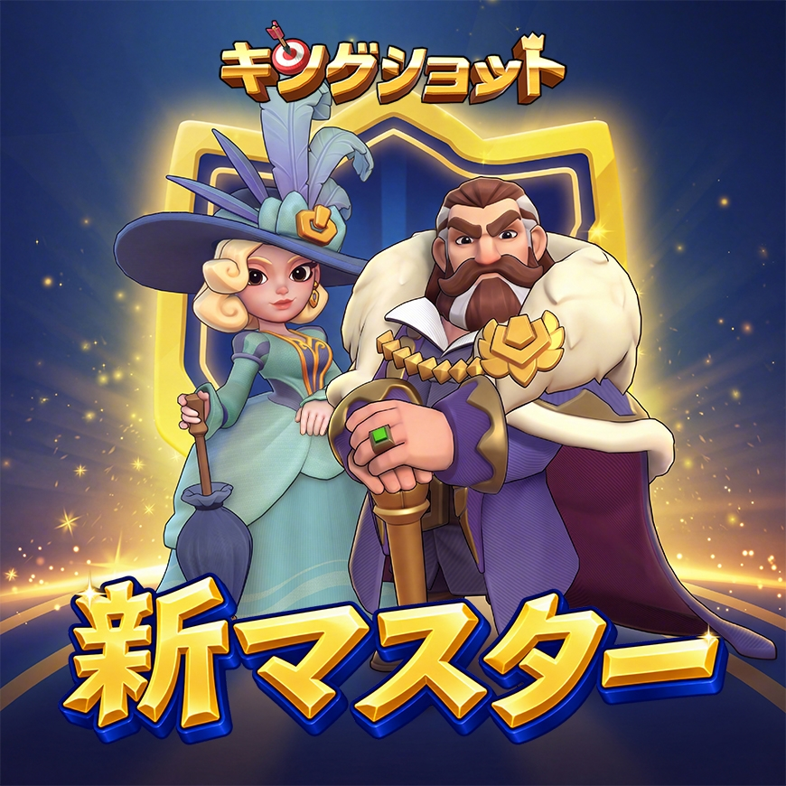
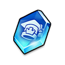
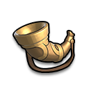
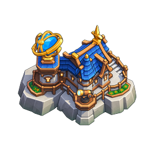

新マスター比較
日課と発展ならキャサリン、KvK・集結主催ならオーランドが育成候補。
役割、スキル、最大育成費を見比べ、普段の遊び方に合う候補を探します。
実装前の非公式プレビューです。 スキルの数値・最大Lv・費用は正式確定値ではなく、実装後の確認が必要です。

実装は11月9日09:00。最初の対象は王国1〜1331
告知されている追加日時は、2026年11月9日09:00（日本時間／00:00 UTC）。最初の対象は王国1〜1331で、その後は順次追加される予定です。対象外の王国に同時に登場するとは限らないため、自分の王国の告知も確認してください。
公式告知では、オーランドは最強王国、キャサリンは内政を担当するマスターとして紹介されています。この役割の違いが、最初の選び分けになります。公式告知／日本語告知の転載確認先
まずは2人の役割を比較
表は左右にスクロールできます →
| 比較する点 | キャサリン | オーランド |
|---|---|---|
| 告知上の役割 | 内政 | 最強王国 |
| プレビューで目立つ効果 | 試練結晶、ペット探検、各種報酬箱 | 準備ポイント、戦闘能力、集結容量 |
| 育成を検討しやすい人 | 日課を継続し、発展につなげたい人 | KvKへの参加が多い人、集結を主催する人 |
| 判断のポイント | 普段こなす日課の報酬がどれだけ増えるか | 自分が参加する段階・役割に効果が適用されるか |
| 最大育成費プレビューの傾向 | オーランドより各素材の掲載総量が少ない | とくにノートの掲載総量が多い |
これは役割と最大効果から見た暫定評価です。「全員キャサリン優先」「KvKに参加するなら必ずオーランド優先」とはせず、日課の消化状況と同盟内での役割に合わせて選びましょう。
キャサリン：日課を続ける人向けの報酬型マスター
キャサリンは、毎日取り組むコンテンツの報酬を増やす方向のマスターです。試練結晶やペット探検に加え、征討や旅に関連する箱がプレビューに含まれています。自分が普段から消化している日課に効果が重なるほど、育成の目的がはっきりします。
スキル最大値・最大Lv・発動条件（非公式プレビュー）
表は左右にスクロールできます →
| 区分・英語名 | 掲載上の最大Lv | 掲載されている最大効果 |
|---|---|---|
| 天賦：Conquest Rewards | 未確認 | 征討60分ごとに箱3個、1日上限10個 |
| Mystic Privileges | Lv5 | 秘境試練の掃討で獲得する試練結晶＋30% |
| Pet Master | Lv5 | ペット探検＋2回／日、報酬の倍化確率35% |
| Beastly Bounty | Lv5 | Terrorへの集結で箱5個、1日上限10個 |
| Traveler’s Honor | Lv10 | 旅の遭遇4回で箱4個、1日上限20個 |
数値と発動条件は、最大まで育てた場合の非公式プレビューです。Lv1の効果ではありません。正式な日本語スキル名は未確認のため英語名を併記しています。実装後は、これらの条件と実際のゲーム内説明が一致するかを確認します。効果の参考／最大Lv等の参考
たとえば、試練やペット探検を継続している人は、関連するスキルを育てる目的を持ちやすいでしょう。一方、報酬箱は中身と獲得条件によって価値が変わります。箱の個数だけを見て、資源やアイテムが一律に何%増えると計算するのは早い段階です。
キャサリンを見るときは、「自分の日課で使える効果か」「その効果が何Lvから十分に働くか」の2点が大切です。 最大効果を目標にする前に、低Lvの効果を確認すると育成の無駄を抑えやすくなります。
オーランド：KvKの準備・戦闘・集結で選び分ける
オーランドのプレビューは、準備段階のポイントや報酬、戦闘能力、集結容量に分かれています。一般参加者が注目する効果と、集結を主催する人が注目する効果を分けて読むと、自分に必要な投資を考えやすくなります。
スキル最大値・最大Lv・発動条件（非公式プレビュー）
表は左右にスクロールできます →
| 区分・英語名 | 掲載上の最大Lv | 掲載されている最大効果 |
|---|---|---|
| 天賦：Battlefield Insight | 未確認 | KvK戦争フェーズ限定で攻撃・防御＋30% |
| Oration | Lv10 | KvK準備ポイント＋20%、毎日の個人報酬を3段階追加 |
| Meritocracy | Lv10 | 勲章報酬の受取時に王国コイン＋50、KvKショップの商品を3つ追加 |
| Combat Fervor | Lv20 | KvK戦争フェーズ限定で殺傷・HP＋30% |
| Combined Arms | Lv20 | KvK戦争フェーズ限定で集結容量＋150,000 |
こちらも非公式の最大値と発動条件です。天賦・Combat Fervor・Combined Armsは、プレビュー上ではKvKの戦争フェーズに限られる効果です。攻撃・防御と殺傷・HPは別の効果で、数値を足して一つの強化率にはできません。適用される部隊や集結への詳しい反映方法は実装後に確認します。効果の参考／最大Lv等の参考
一般参加者は準備段階の恩恵から確認
KvKに参加していても、全員が集結を主催するわけではありません。一般参加者は、まずOrationの準備ポイント＋20%と、毎日の個人報酬3段階追加を、自分の参加状況に照らして確認するとよいでしょう。追加されるのは報酬の段階なので、実装後は各段階の達成条件も確認したいところです。勲章報酬を受け取る人にとっては、Meritocracyの王国コイン増加も比較材料になります。
集結主催者は容量と戦闘効果に注目
集結を主催する人にとっては、Combined Armsの容量＋150,000が検討材料になります。戦闘系の効果とともにKvK戦争フェーズ向けなので、キャサリンとは異なる目的で育成する候補です。誰の部隊や集結にどう反映されるかが分かるまでは、同盟全体の戦力が一律にどれだけ上がるとは判断できません。
最大育成費はどのくらい？ 好感度・バッジ・ノートを分けて比較


画像はアイテムの参考例です。新マスターの専用素材や必要数量を示すものではありません。
非公式サイトの「Cost to max」には、次の総量が掲載されています。何をどこまで含む集計かの説明は確認できていないため、育成負担の規模を比べる参考値として見てください。
最大育成総費（非公式掲載値・集計範囲未確認）
表は左右にスクロールできます →
| マスター | 好感度 | バッジ | ノート |
|---|---|---|---|
| キャサリン | 512,070 | 440 | 57,000 |
| オーランド | 1,570,540 | 1,100 | 345,000 |
同じ掲載項目同士で比較すると、オーランドはキャサリンに対して好感度が約3.1倍、バッジが2.5倍、ノートが約6.1倍です。とくにノートの差が大きく、最大育成を目指す場合には軽く見られません。ただし、この差をそのまま育成日数や課金額の差には置き換えられません。キャサリンの掲載値／オーランドの掲載値
好感度と学習XPは別の数値
ここで注意したいのが、好感度512,070や1,570,540を、学習XPの総量として扱わないことです。好感度、学習XP、バッジ、ノートは区別して確認する必要があります。
今回確認できた総費用の表だけでは、Lvごとの学習XP、学習時間、学習加速の必要量は分かりません。したがって、「無料なら何日で完成する」「この金額で最大になる」「Lv10までならこの数量で足りる」といった段階別の計算はできません。
育成計画を立てるときは、最初から最大を目指すより、欲しい効果と到達Lvを決め、その区間の必要量が分かってから素材を使う方が判断しやすくなります。
プレイスタイル別：どちらを優先する？
表は左右にスクロールできます →
| あなたの遊び方 | 暫定の優先候補 | 選ぶときに確認したいこと |
|---|---|---|
| 日課を継続し、内政や発展を進めたい | キャサリン | よく遊ぶ日課に効果があるか、低Lvでも報酬が増えるか |
| 無課金・微課金で素材を絞って使いたい | キャサリンを起点に比較 | 最大費用の少なさだけで決めず、入手方法と必要な育成段階を確認 |
| KvKの準備を中心に参加する | オーランドのOrationとキャサリンを比較 | 準備ポイント・追加報酬の条件と、普段の日課の恩恵のどちらを多く使うか |
| KvKで集結を主催する | オーランド | 集結容量と戦闘効果の適用対象、目標Lvまでの費用 |
| 熊狩りを最優先に育成している | 既存の育成計画と比較して判断 | 新2人の効果が熊狩りに適用されるか。既存の育成先を一律に置き換えない |
迷う場合は、まず普段使う効果が多い方を候補にし、入手直後の効果を確認してから育成を進めるのがおすすめです。最大値が大きくても、必要なLvに届くまでの費用が重ければ、今の自分にとっての優先順位は変わります。
入手方法と、実装までにしておきたい準備
公式告知では、クインが荒野で新マスターに遭遇できることが案内されています。 まずは対象王国での実装後に、クインを通じた出会いを確認するのが入口になります。公式告知
非公式の事前情報には、旅物資・冒険物資も関連する経路として挙がっています。一方、遭遇から解放までの条件や必要素材、確定入手の有無は未確認です。荒野で出会えることと、誰でも無料ですぐに解放できることは分けて考えましょう。入手経路の参考
実装までの準備は、次の順番で十分です。
- 目的を一つ決める。 日課報酬、KvK準備、集結主催のうち、まず強化したい部分を選びます。
- 現在の素材と育成先を確認する。 ノートや関連素材を何に使う予定かを整理し、新2人のためにどれだけ回せるか考えます。
- 実装後に低Lvの画面を見る。 スキル説明、解放条件、次のLvに必要な素材を確認します。
- 使える効果から育てる。 最大値だけを目標にせず、自分が使う効果に届く区間から判断します。
今の段階で急いで決めたいのは「どちらを最大にするか」よりも、「自分は何の効果が欲しいか」です。その軸が決まっていれば、実装後の情報も選びやすくなります。
実装後に確認したいこと

今回の比較で、まだ埋まっていない主な項目は次のとおりです。
- 各スキルの正式な日本語名、Lvごとの効果、解放条件、天賦の最大Lv。
- 報酬箱の中身、追加の個人報酬の達成条件、プレビューにある日次上限や倍化の実際の処理。
- KvK戦争フェーズの戦闘効果と集結容量が、誰の部隊や集結にどう反映されるか。
- 好感度と学習XPの段階別必要量、ノート・バッジの消費区間、学習時間。
- 王国ごとの追加時期、クインとの遭遇から解放までの条件・費用、旅物資・冒険物資の具体的な扱い。
これらが分かれば、「低Lvで止めるならどちらか」「欲しいスキルまでどれだけ育てるか」まで踏み込んで比較できます。現時点では、キャサリンは日課と発展、オーランドはKvKという役割を軸に、育成候補を絞る段階です。
出典と情報の扱い
- Kingshot公式告知：追加日時、初期対象王国、2人の役割、クインによる荒野での遭遇。本文の取得制限があるため、収集時は日本語告知の転載とも照合。
- Kingshot World：Catherine / Olanderガイド：非公式の効果プレビューと入手経路の参考。
- hededal.com：非公式プレビューの最大Lv・効果の参考。
- Kingshot Packs：Catherine／Olander：非公式の「Cost to max」掲載値。集計範囲は未確認。
情報の基準日は2026年11月8日です。非公式の掲載値は実機検証済みの確定値ではなく、複数サイトの掲載を独立した実測結果とも扱っていません。関連動画は画面・字幕を検証していないため、本記事の実測根拠には使用していません。
画像について：参考収集した公式告知・公式Wiki・第三者サイトの原画像は、公開への転載許諾を取得した素材ではありません。出典表示だけで掲載可能とは判断せず、Century Gamesの規約と各出典の条件を確認する必要があります。第三者の編集バナーやスキルカードも同様です。
画像の出典と利用状況
告知画像：公式日本語告知の転載確認先。アイテム画像：Kingshot Wiki アイテム。クイン：Kingshot Wiki。学院：Kingshot Optimizer。いずれもローカル確認用の参考配置であり、掲載許可は未確認です。